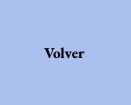
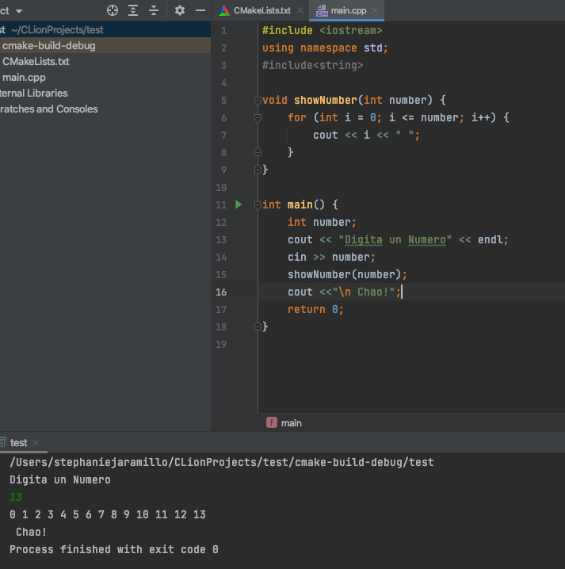

Tarea 1 Periodo 2

Para entender mejor la tarea empece a ver todos los video de la clase y las photos que tome. Habia hecho una funcion cuando me di cuenta que no era lo que pedistes. Me toco empezar de nuevo. Por ahi derecho DEV C++ no me dejaba usar mucho de mi teclado ya que es windows. Entonces cada segundo tenia que copiar y pegar para que, por ejemplo estuviran las llaves. No me gusto la aplicacion asi que descarge una que me habia recomendado mi primo hace muchooo tiempo. Me gusto mucho y si no hay problema continuare usandola. Aunque se demoro me gusto mucho esta tarea.